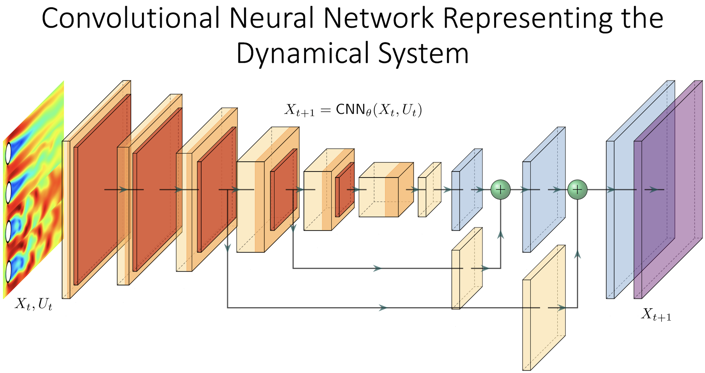
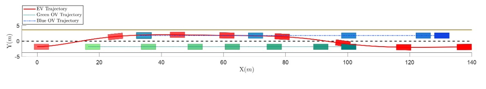
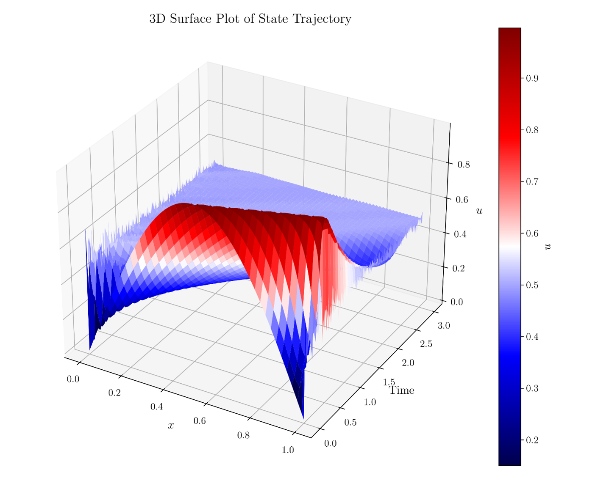

2026 · Conference paper
Continuous-Time Optimal Control of Neural ODEs via Bayesian Inference
Ali Vaziri, et al. · IEEE Conference on Decision and Control (CDC)
Accepted
Publications
Selected peer-reviewed and accepted work on machine-learning dynamical models, Bayesian inferential motion planning, optimal inferential control, and physics-constrained learning.
2026 · Conference paper
Ali Vaziri, et al. · IEEE Conference on Decision and Control (CDC)

2026 · Journal article
Ali Vaziri, et al. · Applied Thermal Engineering

2025 · Conference paper
Ali Vaziri, et al. · American Control Conference (ACC) · Best Student Paper nominee

2025 · Conference paper
Ali Vaziri, et al. · American Control Conference (ACC)

2025 · Journal article
Iman Askari, Ali Vaziri, et al. · IEEE Transactions on Robotics

Manuscript
Ali Vaziri, et al.

Manuscript
Ali Vaziri, et al.